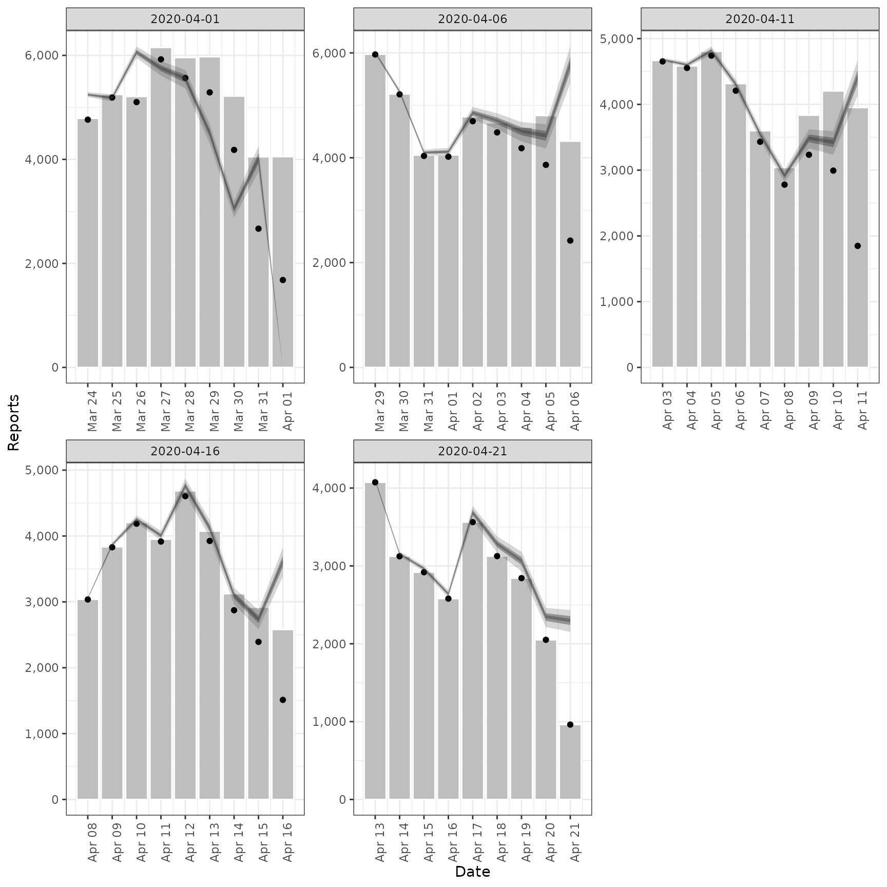
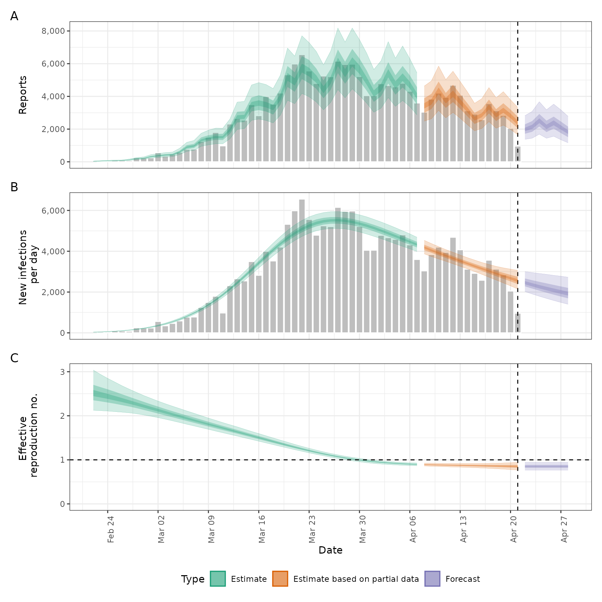

![[Stable]](figures/lifecycle-stable.svg) Estimates a truncation distribution from multiple snapshots of the same
data source over time. This distribution can then be used passed to the
Estimates a truncation distribution from multiple snapshots of the same
data source over time. This distribution can then be used passed to the
truncation argument in regional_epinow(), epinow(), and
estimate_infections() to adjust for truncated data and propagate the
uncertainty associated with data truncation into the estimates.
See here
for an example of using this approach on Covid-19 data in England. The
functionality offered by this function is now available in a more principled
manner in the epinowcast R package.
The model of truncation is as follows:
The truncation distribution is assumed to be discretised log normal wit a mean and standard deviation that is informed by the data.
The data set with the latest observations is adjusted for truncation using the truncation distribution.
Earlier data sets are recreated by applying the truncation distribution to the adjusted latest observations in the time period of the earlier data set. These data sets are then compared to the earlier observations assuming a negative binomial observation model with an additive noise term to deal with zero observations.
This model is then fit using stan with standard normal, or half normal,
prior for the mean, standard deviation, 1 over the square root of the
overdispersion and additive noise term.
This approach assumes that:
Current truncation is related to past truncation.
Truncation is a multiplicative scaling of underlying reported cases.
Truncation is log normally distributed.
Arguments
- data
A list of
<data.frame>s each containing a date variable and a confirm (numeric) variable. Each data set should be a snapshot of the reported data over time. All data sets must contain a complete vector of dates.- truncation
A call to
trunc_opts()defining the truncation of the observed data. Defaults totrunc_opts(), i.e. no truncation. See theestimate_truncation()help file for an approach to estimating this from data where thedistlist element returned byestimate_truncation()is used as thetruncationargument here, thereby propagating the uncertainty in the estimate.- model
A compiled stan model to override the default model. May be useful for package developers or those developing extensions.
- stan
A list of stan options as generated by
stan_opts(). Defaults tostan_opts(). Can be used to overridedata,init, andverbosesettings if desired.- CrIs
Numeric vector of credible intervals to calculate.
- filter_leading_zeros
Logical, defaults to TRUE. Should zeros at the start of the time series be filtered out.
- zero_threshold
![[Experimental]](figures/lifecycle-experimental.svg) Numeric defaults
to Inf. Indicates if detected zero cases are meaningful by using a threshold
number of cases based on the 7-day average. If the average is above this
threshold then the zero is replaced using
Numeric defaults
to Inf. Indicates if detected zero cases are meaningful by using a threshold
number of cases based on the 7-day average. If the average is above this
threshold then the zero is replaced using fill.- weigh_delay_priors
Deprecated; use the
weight_prioroption intrunc_opts()instead.- verbose
Logical, should model fitting progress be returned.
- ...
Additional parameters to pass to
rstan::sampling().- obs
Deprecated; use
datainstead.
Value
A list containing: the summary parameters of the truncation
distribution (dist), which could be passed to the truncation argument
of epinow(), regional_epinow(), and estimate_infections(), the
estimated CMF of the truncation distribution (cmf, can be used to
adjusted new data), a <data.frame> containing the observed truncated
data, latest observed data and the adjusted for
truncation observations (obs), a <data.frame> containing the last
observed data (last_obs, useful for plotting and validation), the data
used for fitting (data) and the fit object (fit).
Examples
# \donttest{
# set number of cores to use
old_opts <- options()
options(mc.cores = ifelse(interactive(), 4, 1))
# fit model to example data
# See [example_truncated] for more details
est <- estimate_truncation(example_truncated,
verbose = interactive(),
chains = 2, iter = 2000
)
#> WARN [2025-07-27 19:28:06] estimate_truncation (chain: 1): There were 12 divergent transitions after warmup. See
#> https://mc-stan.org/misc/warnings.html#divergent-transitions-after-warmup
#> to find out why this is a problem and how to eliminate them. -
#> WARN [2025-07-27 19:28:06] estimate_truncation (chain: 1): Examine the pairs() plot to diagnose sampling problems
#> -
# summary of the distribution
est$dist
#> - lognormal distribution (max: 10):
#> meanlog:
#> - normal distribution:
#> mean:
#> -1.9
#> sd:
#> 0.43
#> sdlog:
#> - normal distribution:
#> mean:
#> 2.2
#> sd:
#> 0.67
# summary of the estimated truncation cmf (can be applied to new data)
print(est$cmf)
#> index mean se_mean sd lower_90 lower_50 lower_20
#> <int> <num> <num> <num> <num> <num> <num>
#> 1: 1 1.0000000 2.801529e-18 1.256388e-16 1.0000000 1.0000000 1.0000000
#> 2: 2 0.9971742 4.669561e-05 1.552579e-03 0.9945283 0.9961459 0.9968000
#> 3: 3 0.9937658 1.000945e-04 3.321900e-03 0.9881314 0.9915418 0.9929070
#> 4: 4 0.9895641 1.619024e-04 5.362306e-03 0.9805792 0.9858907 0.9881376
#> 5: 5 0.9842390 2.344679e-04 7.748545e-03 0.9713916 0.9788712 0.9820775
#> 6: 6 0.9772399 3.210931e-04 1.058578e-02 0.9599252 0.9699245 0.9742254
#> 7: 7 0.9675667 4.264622e-04 1.402416e-02 0.9451067 0.9576852 0.9633730
#> 8: 8 0.9531682 5.567981e-04 1.827261e-02 0.9246759 0.9401235 0.9472359
#> 9: 9 0.9289346 7.196446e-04 2.354254e-02 0.8933593 0.9125719 0.9212972
#> 10: 10 0.8762642 7.678436e-04 2.907679e-02 0.8330842 0.8569209 0.8664747
#> 11: 11 0.4195485 3.993806e-04 1.657050e-02 0.3952905 0.4084131 0.4143418
#> median upper_20 upper_50 upper_90
#> <num> <num> <num> <num>
#> 1: 1.0000000 1.0000000 1.0000000 1.0000000
#> 2: 0.9972564 0.9976576 0.9983536 0.9996674
#> 3: 0.9939005 0.9947529 0.9962641 0.9991707
#> 4: 0.9897026 0.9910789 0.9935417 0.9984056
#> 5: 0.9843023 0.9863243 0.9899002 0.9972676
#> 6: 0.9771733 0.9799593 0.9848604 0.9954110
#> 7: 0.9670746 0.9708498 0.9773486 0.9921883
#> 8: 0.9521348 0.9571272 0.9653540 0.9859633
#> 9: 0.9268308 0.9334569 0.9440645 0.9701574
#> 10: 0.8733195 0.8809583 0.8936986 0.9251443
#> 11: 0.4180231 0.4223019 0.4291331 0.4466159
# observations linked to truncation adjusted estimates
print(est$obs)
#> date confirm last_confirm report_date mean se_mean sd lower_90
#> <Date> <num> <num> <Date> <int> <int> <int> <int>
#> 1: 2020-03-24 4764 4789 2020-04-01 5245 0 28 5199
#> 2: 2020-03-25 5191 5249 2020-04-01 5184 1 40 5115
#> 3: 2020-03-26 5102 5210 2020-04-01 6062 1 65 5951
#> 4: 2020-03-27 5924 6153 2020-04-01 5754 2 83 5610
#> 5: 2020-03-28 5567 5959 2020-04-01 5550 3 106 5364
#> 6: 2020-03-29 5289 5974 2020-04-01 4505 3 113 4311
#> 7: 2020-03-30 4183 5217 2020-04-01 3048 2 99 2883
#> 8: 2020-03-31 2668 4050 2020-04-01 4012 3 155 3763
#> 9: 2020-04-01 1681 4053 2020-04-01 0 NA 0 0
#> 10: 2020-03-29 5970 5974 2020-04-06 6007 0 20 5974
#> 11: 2020-03-30 5209 5217 2020-04-06 5264 0 28 5217
#> 12: 2020-03-31 4035 4050 2020-04-06 4099 0 32 4046
#> 13: 2020-04-01 4020 4053 2020-04-06 4114 1 44 4038
#> 14: 2020-04-02 4697 4782 2020-04-06 4855 2 70 4733
#> 15: 2020-04-03 4483 4668 2020-04-06 4704 2 89 4546
#> 16: 2020-04-04 4182 4585 2020-04-06 4504 3 113 4310
#> 17: 2020-04-05 3864 4805 2020-04-06 4414 3 144 4176
#> 18: 2020-04-06 2420 4316 2020-04-06 5776 5 223 5418
#> 19: 2020-04-03 4653 4668 2020-04-11 4682 0 15 4656
#> 20: 2020-04-04 4554 4585 2020-04-11 4602 0 24 4561
#> 21: 2020-04-05 4741 4805 2020-04-11 4817 1 37 4753
#> 22: 2020-04-06 4208 4316 2020-04-11 4306 1 46 4227
#> 23: 2020-04-07 3431 3599 2020-04-11 3546 1 51 3458
#> 24: 2020-04-08 2779 3039 2020-04-11 2916 1 55 2818
#> 25: 2020-04-09 3234 3836 2020-04-11 3483 2 87 3333
#> 26: 2020-04-10 2993 4204 2020-04-11 3419 2 111 3235
#> 27: 2020-04-11 1848 3951 2020-04-11 4411 4 170 4137
#> 28: 2020-04-08 3036 3039 2020-04-16 3055 0 10 3038
#> 29: 2020-04-09 3829 3836 2020-04-16 3869 0 20 3835
#> 30: 2020-04-10 4187 4204 2020-04-16 4254 1 33 4198
#> 31: 2020-04-11 3916 3951 2020-04-16 4007 1 43 3934
#> 32: 2020-04-12 4605 4686 2020-04-16 4760 2 68 4641
#> 33: 2020-04-13 3925 4074 2020-04-16 4119 2 78 3980
#> 34: 2020-04-14 2873 3124 2020-04-16 3094 2 77 2961
#> 35: 2020-04-15 2393 2919 2020-04-16 2733 2 89 2586
#> 36: 2020-04-16 1512 2580 2020-04-16 3609 3 139 3385
#> 37: 2020-04-13 4074 4074 2020-04-21 4099 0 13 4077
#> 38: 2020-04-14 3124 3124 2020-04-21 3157 0 17 3128
#> 39: 2020-04-15 2919 2919 2020-04-21 2965 0 23 2926
#> 40: 2020-04-16 2580 2580 2020-04-21 2640 0 28 2591
#> 41: 2020-04-17 3563 3563 2020-04-21 3683 1 53 3591
#> 42: 2020-04-18 3126 3126 2020-04-21 3280 1 62 3170
#> 43: 2020-04-19 2843 2843 2020-04-21 3062 2 76 2930
#> 44: 2020-04-20 2051 2051 2020-04-21 2343 1 76 2216
#> 45: 2020-04-21 962 962 2020-04-21 2296 2 88 2153
#> date confirm last_confirm report_date mean se_mean sd lower_90
#> lower_50 lower_20 median upper_20 upper_50 upper_90
#> <int> <int> <int> <int> <int> <int>
#> 1: 5224 5237 5245 5253 5265 5293
#> 2: 5154 5172 5183 5195 5212 5252
#> 3: 6015 6045 6062 6080 6107 6171
#> 4: 5696 5734 5756 5778 5812 5890
#> 5: 5478 5525 5554 5583 5625 5719
#> 6: 4430 4481 4513 4540 4583 4682
#> 7: 2985 3028 3055 3079 3113 3202
#> 8: 3917 3980 4021 4057 4115 4252
#> 9: 0 0 0 0 0 0
#> 10: 5992 6001 6006 6012 6020 6041
#> 11: 5242 5255 5263 5271 5283 5312
#> 12: 4076 4090 4099 4108 4122 4153
#> 13: 4081 4102 4113 4126 4144 4187
#> 14: 4805 4838 4856 4875 4904 4969
#> 15: 4643 4683 4708 4732 4768 4848
#> 16: 4429 4480 4512 4539 4582 4681
#> 17: 4323 4386 4424 4459 4509 4638
#> 18: 5639 5730 5789 5840 5925 6122
#> 19: 4670 4677 4681 4686 4692 4708
#> 20: 4583 4594 4601 4608 4619 4644
#> 21: 4789 4806 4816 4827 4843 4880
#> 22: 4272 4294 4306 4319 4338 4383
#> 23: 3510 3534 3547 3561 3582 3630
#> 24: 2878 2903 2918 2933 2955 3005
#> 25: 3425 3464 3489 3510 3543 3620
#> 26: 3349 3397 3427 3454 3492 3592
#> 27: 4306 4376 4420 4460 4524 4675
#> 28: 3047 3052 3054 3057 3061 3072
#> 29: 3853 3863 3868 3874 3883 3904
#> 30: 4229 4245 4253 4263 4277 4310
#> 31: 3976 3996 4007 4019 4037 4079
#> 32: 4711 4743 4761 4780 4808 4872
#> 33: 4065 4100 4122 4143 4174 4244
#> 34: 3043 3077 3099 3118 3148 3215
#> 35: 2677 2716 2740 2761 2792 2872
#> 36: 3523 3580 3617 3649 3702 3825
#> 37: 4089 4095 4099 4103 4108 4122
#> 38: 3144 3152 3156 3161 3168 3185
#> 39: 2948 2959 2965 2972 2982 3004
#> 40: 2619 2632 2640 2648 2660 2687
#> 41: 3645 3669 3684 3698 3720 3769
#> 42: 3238 3266 3283 3300 3325 3380
#> 43: 3011 3045 3067 3085 3115 3182
#> 44: 2294 2328 2348 2367 2393 2461
#> 45: 2241 2277 2301 2321 2355 2433
#> lower_50 lower_20 median upper_20 upper_50 upper_90
# validation plot of observations vs estimates
plot(est)

# Pass the truncation distribution to `epinow()`.
# Note, we're using the last snapshot as the observed data as it contains
# all the previous snapshots. Also, we're using the default options for
# illustrative purposes only.
out <- epinow(
generation_time = generation_time_opts(example_generation_time),
example_truncated[[5]],
truncation = trunc_opts(est$dist)
)
#> Logging threshold set at INFO for the name logger
#> Writing EpiNow2 logs to the console and:
#> /tmp/RtmpiO32lN/regional-epinow/2020-04-21.log.
#> Logging threshold set at INFO for the name logger
#> Writing EpiNow2.epinow logs to the console and:
#> /tmp/RtmpiO32lN/epinow/2020-04-21.log.
#> WARN [2025-07-27 19:30:56] epinow: There were 12 divergent transitions after warmup. See
#> https://mc-stan.org/misc/warnings.html#divergent-transitions-after-warmup
#> to find out why this is a problem and how to eliminate them. -
#> WARN [2025-07-27 19:30:56] epinow: Examine the pairs() plot to diagnose sampling problems
#> -
plot(out)

options(old_opts)
# }